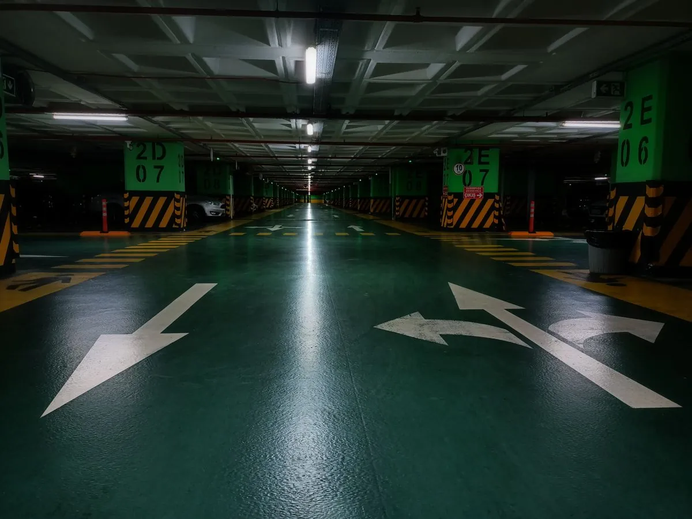

Garage floor epoxy is the job we run most often in Sioux Falls, and it is easy to see why: the garage floor absorbs months of salt, slush, and sub-zero road grime every winter. A properly installed system turns a stained, chalky slab into a sealed surface that wipes clean instead of soaking everything in.

We start with diamond grinding to strip old sealers, oil contamination, and the top layer of concrete cream, opening a profile the coating can mechanically bond to. Acid etching does not open the surface deeply enough for a garage floor, so we skip it entirely.
After grinding, we fill cracks and control joints, vacuum the dust, and apply a moisture-appropriate primer, a base color coat with optional flake broadcast, and a clear topcoat. Most two-car garages take one to two days start to finish.
Common triggers are visible salt staining, hot tire marks from summer driving, hairline cracks that widen every winter, or simply wanting a garage that cleans up like a showroom instead of a job site. Homeowners who just bought in Sioux Falls also tend to coat early, before the slab picks up years of oil and salt residue.
Bare concrete is porous, and it absorbs the salt and de-icing chemicals tracked in off winter roads. That moisture expands and contracts through South Dakota's hard freeze-thaw cycles, which run from November into March with regular sub-zero snaps. Over several winters, that cycle causes surface pitting and spalling — the flaking, rough texture you see on older uncoated garage floors. Summer hot tire pickup adds to the wear by softening whatever old sealer is left.
Expect $4 to $10 per square foot installed, or roughly $1,800 to $5,500 for a typical two-car garage. Floor prep is the biggest cost driver: a slab with heavy salt staining, peeling old paint, or multiple cracks takes longer to grind and repair than a clean, bare slab. Coating choice matters too — water-based epoxy runs cheaper but lasts 3 to 5 years, while solid epoxy or polyaspartic systems cost more up front and can last 10 to 20 years.
Solid epoxy gives strong chemical and abrasion resistance and is the standard choice for most Sioux Falls garages. Polyaspartic topcoats cure much faster, even in cooler shop temperatures, which makes them the better fit for jobs scheduled in late fall or early spring when garage temperatures hover in the 40s. Many of our projects combine both: a solid epoxy base with a polyaspartic topcoat for faster turnaround and added UV stability.
Light foot traffic is fine after about 24 hours, but plan to keep vehicles off the floor for a full week so the coating reaches full cure hardness before it takes tire weight and turning friction.
We grind out and fill cracks before coating instead of painting over them, since an unfilled crack will telegraph through the epoxy and keep moving with the slab through Sioux Falls' hard freeze-thaw swings.
No, that is a main reason to coat a garage floor here. The epoxy seals the concrete so salt brine and de-icer runoff sit on the surface where they mop up, instead of soaking into the slab and causing pitting.
Yes, once fully cured, a properly installed epoxy system handles daily vehicle traffic, including trucks and SUVs, without issue. We recommend solid epoxy or a polyaspartic topcoat for garages that regularly see heavier vehicles.